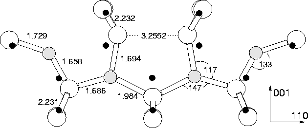
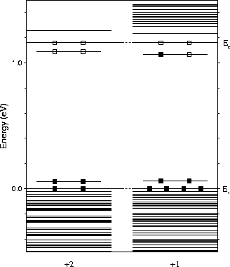
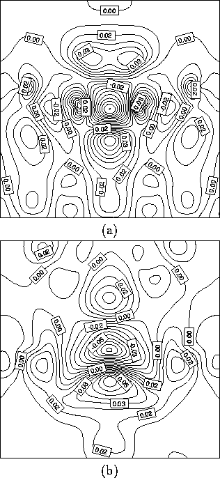
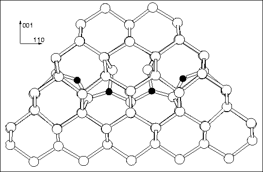
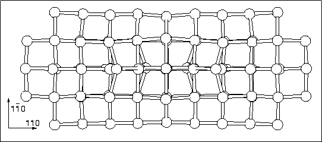
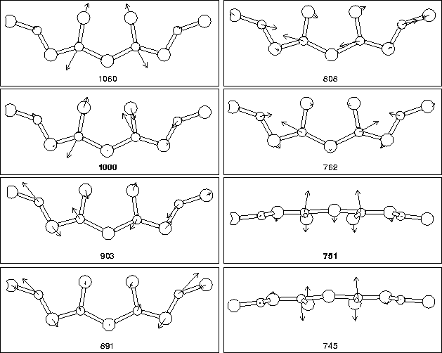

The structure of the di-y-lid is somewhat different to that of the
STDs examined in the previous chapter. The defect consists of a pair
of oxygen dimers; all the other atoms are lattice Si. These dimers lie
in the same  110
110 plane but are separated by two empty Si-Si
bonds; the electrical activity occurs when the inner pair of O atoms
become trivalent, both bonding to the central lattice Si (see
Figure 9.4). The defect has no oxygen atoms on the
C2 axis along
plane but are separated by two empty Si-Si
bonds; the electrical activity occurs when the inner pair of O atoms
become trivalent, both bonding to the central lattice Si (see
Figure 9.4). The defect has no oxygen atoms on the
C2 axis along  100
100 , consistent with the EPR and ENDOR data
available on the thermal donors. Crucially it has a double donor
level very close to the conduction band. Since at anneal temperatures
this would normally be depopulated, in all of the simulations
discussed below we have modelled the defect in the +2 charge state,
i.e. this shallow level is depopulated. Exceptions to this are
discussed in the text.
, consistent with the EPR and ENDOR data
available on the thermal donors. Crucially it has a double donor
level very close to the conduction band. Since at anneal temperatures
this would normally be depopulated, in all of the simulations
discussed below we have modelled the defect in the +2 charge state,
i.e. this shallow level is depopulated. Exceptions to this are
discussed in the text.
The cluster used was Si79H68O4, charged +2. Weak
additional quadratic spring potentials (kr = 5.0 eV/Å2) were
used to constrain the surface H atoms, in order to simulate the effect
of the rest of bulk. The structure is shown in
Figure 9.4, along with bond lengths (Å) and angles
(degrees). The black dots mark out the ideal Si lattice sites and
show the displacements and resultant stress caused by the defect. The
whole cluster, with surface hydrogen atoms removed for clarity, is
shown in Figures 9.7 and 9.8. These
diagrams clearly show the tensile/compressive effect the defect has on
the surrounding lattice. It is highly compressive along  100
100 ,
and tensile along
,
and tensile along  110
110 and
and  110
110 , at least closer to the
core. The
, at least closer to the
core. The  110
110 tensile strain is only extremely weak, and it
may be that the shape of our cluster, with very little bulk Si along
tensile strain is only extremely weak, and it
may be that the shape of our cluster, with very little bulk Si along
 110
110 from the defect, provided too great a constraint in this
direction.
from the defect, provided too great a constraint in this
direction.
|  |
The defect essentially consists of a pair of dimers separated by what
would normally be two  110
110 Si-Si bonds. However the dimers have
tilted in so that the inner two O atoms are somewhat overcoordinated
(whether they are truly trivalent is a debatable point, since the
inner Si-O bond is extremely long for a covalent bond). Meanwhile the
top two Si atoms in the defect core form a shared reconstructed bond.
Thus it is possible to either view the structure as a defect core with
fully coordinated Si atoms and two trivalent oxygen atoms, or
alternatively with two roughly divalent oxygen atoms and an
undercoordinated core Si atom, whose remaining non-bonded electron
pair are being electrostatically compressed by the oxygen atoms. The
reconstructed Si-Si bond is extremely long, and it is possible that
this is also contributing an anti-bonding state to the defect, similar
to the `A-centre' (OV-) which has a next neighbour dilated Si-Si
bond, whose antibonding equivilent can act as an electron trap to make
the defect negatively charged. This reconstructed bond is also
important when considering strain effects of further dimer addition
(see below).
Si-Si bonds. However the dimers have
tilted in so that the inner two O atoms are somewhat overcoordinated
(whether they are truly trivalent is a debatable point, since the
inner Si-O bond is extremely long for a covalent bond). Meanwhile the
top two Si atoms in the defect core form a shared reconstructed bond.
Thus it is possible to either view the structure as a defect core with
fully coordinated Si atoms and two trivalent oxygen atoms, or
alternatively with two roughly divalent oxygen atoms and an
undercoordinated core Si atom, whose remaining non-bonded electron
pair are being electrostatically compressed by the oxygen atoms. The
reconstructed Si-Si bond is extremely long, and it is possible that
this is also contributing an anti-bonding state to the defect, similar
to the `A-centre' (OV-) which has a next neighbour dilated Si-Si
bond, whose antibonding equivilent can act as an electron trap to make
the defect negatively charged. This reconstructed bond is also
important when considering strain effects of further dimer addition
(see below).
Several of the core atoms move slightly away from the ideal (110) lattice plane, and without this shift the defect is not stable. All the displacements described are along the same direction. The top two Si atoms and the two core O atoms are displaced by 0.062 Å and 0.058 Å from the (110) plane respectively (these figures are the same within the numerical limits of AIMPRO). There is some assymetry in the back Si-Si bonds of the core Si atom (2.218 and 2.230 Å). The outer two O atoms are displaced out-of-plane by 0.074 Å. The other three `core' Si atoms are displaced by less than 0.025 Å. These displacements may be sufficient to explain the `slight deviations' from C2v symmetry observed by EPR[207].
|  |
The Kohn-Sham eigenvalues are given in Figure 9.5, scaled to the experimental band gap of 1.16 eV. As can be seen, the defect possesses a shallow double donor level which is depopulated in the +2 charge state. Adding a single electron to the system and relaxing once more does not produce any significant change in structure or vibrational modes. The donor level appears to drop very slightly away from the conduction band in this case. Slices through the donor wavefunction are shown in Figure 9.6. Note that in practise the donor states will be effective-mass like and will be considerably more delocalised, however they are confined here in a finite cluster.
|  |
We next examined the vibrational modes of the defect core, along with
the square of the dipole moment for each mode, which is linearly
proportional to its absorption strength in FTIR. The results are
given in Table 9.2. As can be seen, there are two modes
lying at 999 cm-1 and 734 cm-1 which are more intense than
the others. We also examined the shift in these modes with differing
oxygen isotope, in Table 9.2. The agreement with the
experimentally observed LVMs for the thermal donors is remarkable.
Unfortunately the accuracy of our method does not allow us to
distinguish between the different thermal donors, whose vibrational
modes only differ by a few wavenumbers. There is however agreement
with the observed TD3 LVMs to less than 0.5% in the higher mode, with
 3% error in the lower mode. The core atom displacements
associated with each mode are shown in Figure 9.9. It
can be seen that the two most intense modes are primarily a high
frequency asymmetric oxygen stretch mode associated with the core
Oi atoms (stretch in the
3% error in the lower mode. The core atom displacements
associated with each mode are shown in Figure 9.9. It
can be seen that the two most intense modes are primarily a high
frequency asymmetric oxygen stretch mode associated with the core
Oi atoms (stretch in the  001
001 direction), and a lower
frequency out-of-plane wag mode with the two core Oi atoms once
more, this time vibrating in phase. Thus they crudely approximate to
a coupled stretch, and a wag mode.
direction), and a lower
frequency out-of-plane wag mode with the two core Oi atoms once
more, this time vibrating in phase. Thus they crudely approximate to
a coupled stretch, and a wag mode.
| LVM | (Dipole moment)2 | Source | 16O | 17O | 18O |
| (cm-1) | (Intensity) | ||||
| 1050 | 0.126 | 4lExperiment | |||
| 1000 | 0.249 | TD2 | 988 | 945 | |
|---|---|---|---|---|---|
| 903 | 0.206 | 724 | |||
| 891 | 0.151 | ||||
| 808 | 0.190 | TD3 | 999 | 955 | |
| 762 | 0.019 | 728 | |||
| 751 | 0.323 | ||||
| 745 | 0.001 | Di-ylid | 1000 | 976 | 955 |
| 633 | 0.113 | 751 | 738 | 726 |
|  |
|  |
|  |